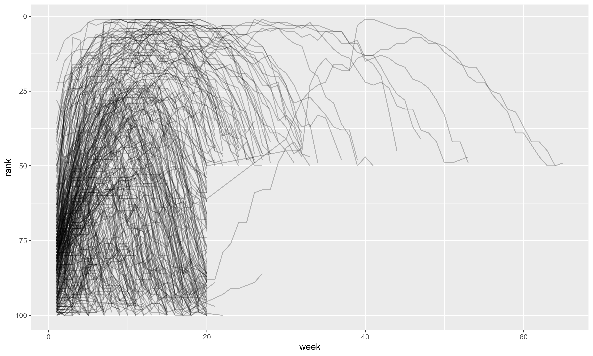

Introducción a la Programación con R - Tidyverse
Sesión 4: Organización de Datos
Esquema de la sesión
- ¿Qué son datos ordenados (tidy data)?
- Principios de datos tidy
- Alargar datos:
pivot_longer() - Ensanchar datos:
pivot_wider() - Casos especiales y problemas comunes
- Ejercicios prácticos
Introducción
Una cita famosa
“Las familias felices son todas iguales; cada familia infeliz es infeliz a su manera.”
— Leo Tolstoy
“Los conjuntos de datos ordenados son todos iguales, pero cada conjunto de datos desordenado es desordenado a su manera.”
— Hadley Wickham
¿Por qué ordenar datos?
- La mayoría de los datos reales están desordenados
- Organizar datos toma tiempo al inicio
- Pero ahorra mucho más tiempo después
- Con datos ordenados, el análisis es más fácil
- Las herramientas del tidyverse funcionan mejor con datos ordenados
Cargar paquetes
El paquete tidyr (parte de tidyverse) proporciona herramientas para ordenar datos.
¿Qué son datos tidy?
Los mismos datos, 3 formas diferentes
Tabla 1:
country year cases population
Afghanistan 1999 745 19987071
Afghanistan 2000 2666 20595360
Brazil 1999 37737 172006362Tabla 2:
country year type count
Afghanistan 1999 cases 745
Afghanistan 1999 population 19987071
Afghanistan 2000 cases 2666¿Cuál es más fácil de usar?
Los tres principios de datos tidy
- Cada variable es una columna
- Cada observación es una fila
- Cada valor es una celda
Visualización de los principios

- Variables → Columnas
- Observaciones → Filas
- Valores → Celdas
¿Por qué usar datos tidy?
- Consistencia: Una forma estándar de almacenar datos
- Fácil aprender herramientas que funcionan con esta estructura
- Todas tienen uniformidad subyacente
- Naturaleza vectorizada de R:
- Variables en columnas permiten que R brille
- Funciones de R trabajan con vectores de valores
- Transformar datos tidy es natural
Ejemplo: Trabajar con datos tidy
# A tibble: 6 × 5
country year cases population rate
<chr> <dbl> <dbl> <dbl> <dbl>
1 Afghanistan 1999 745 19987071 0.373
2 Afghanistan 2000 2666 20595360 1.29
3 Brazil 1999 37737 172006362 2.19
4 Brazil 2000 80488 174504898 4.61
5 China 1999 212258 1272915272 1.67
6 China 2000 213766 1280428583 1.67 country year cases population rate
Afghanistan 1999 745 19987071 0.373
Afghanistan 2000 2666 20595360 1.29
Brazil 1999 37737 172006362 2.19Visualizar datos tidy

Tip
Con datos tidy, crear visualizaciones es directo y simple
Alargar datos: pivot_longer()
Problema común: Datos en nombres de columnas
La mayoría de datos reales están desordenados por dos razones:
- Los datos se organizan para facilitar entrada, no análisis
- La mayoría de personas no conocen principios de datos tidy
Solución: pivot_longer() y pivot_wider()
Ejemplo: Billboard
# A tibble: 317 × 79
artist track date.entered wk1 wk2 wk3 wk4 wk5 wk6 wk7 wk8
<chr> <chr> <date> <dbl> <dbl> <dbl> <dbl> <dbl> <dbl> <dbl> <dbl>
1 2 Pac Baby… 2000-02-26 87 82 72 77 87 94 99 NA
2 2Ge+her The … 2000-09-02 91 87 92 NA NA NA NA NA
3 3 Doors D… Kryp… 2000-04-08 81 70 68 67 66 57 54 53
4 3 Doors D… Loser 2000-10-21 76 76 72 69 67 65 55 59
5 504 Boyz Wobb… 2000-04-15 57 34 25 17 17 31 36 49
6 98^0 Give… 2000-08-19 51 39 34 26 26 19 2 2
7 A*Teens Danc… 2000-07-08 97 97 96 95 100 NA NA NA
8 Aaliyah I Do… 2000-01-29 84 62 51 41 38 35 35 38
9 Aaliyah Try … 2000-03-18 59 53 38 28 21 18 16 14
10 Adams, Yo… Open… 2000-08-26 76 76 74 69 68 67 61 58
# ℹ 307 more rows
# ℹ 68 more variables: wk9 <dbl>, wk10 <dbl>, wk11 <dbl>, wk12 <dbl>,
# wk13 <dbl>, wk14 <dbl>, wk15 <dbl>, wk16 <dbl>, wk17 <dbl>, wk18 <dbl>,
# wk19 <dbl>, wk20 <dbl>, wk21 <dbl>, wk22 <dbl>, wk23 <dbl>, wk24 <dbl>,
# wk25 <dbl>, wk26 <dbl>, wk27 <dbl>, wk28 <dbl>, wk29 <dbl>, wk30 <dbl>,
# wk31 <dbl>, wk32 <dbl>, wk33 <dbl>, wk34 <dbl>, wk35 <dbl>, wk36 <dbl>,
# wk37 <dbl>, wk38 <dbl>, wk39 <dbl>, wk40 <dbl>, wk41 <dbl>, wk42 <dbl>, …# A tibble: 317 × 79
artist track date.entered wk1 wk2 wk3
<chr> <chr> <date> <dbl> <dbl> <dbl>
1 2 Pac Baby Don't Cry 2000-02-26 87 82 72
2 2Ge+her The Hardest Part 2000-09-02 91 87 92
3 3 Doors Down Kryptonite 2000-04-08 81 70 68
# ... with 73 more columns: wk4, wk5, wk6, ...Problema con billboard
- Cada observación es una canción
artist,track,date.enteredson variables- Pero
wk1,wk2, …wk76también son columnas - Los nombres de columnas son valores de una variable (
week) - Los valores de las celdas son otra variable (
rank)
Solución: pivot_longer()
# A tibble: 24,092 × 5
artist track date.entered week rank
<chr> <chr> <date> <chr> <dbl>
1 2 Pac Baby Don't Cry (Keep... 2000-02-26 wk1 87
2 2 Pac Baby Don't Cry (Keep... 2000-02-26 wk2 82
3 2 Pac Baby Don't Cry (Keep... 2000-02-26 wk3 72
4 2 Pac Baby Don't Cry (Keep... 2000-02-26 wk4 77
5 2 Pac Baby Don't Cry (Keep... 2000-02-26 wk5 87
6 2 Pac Baby Don't Cry (Keep... 2000-02-26 wk6 94
7 2 Pac Baby Don't Cry (Keep... 2000-02-26 wk7 99
8 2 Pac Baby Don't Cry (Keep... 2000-02-26 wk8 NA
9 2 Pac Baby Don't Cry (Keep... 2000-02-26 wk9 NA
10 2 Pac Baby Don't Cry (Keep... 2000-02-26 wk10 NA
# ℹ 24,082 more rows# A tibble: 24,092 × 5
artist track date.entered week rank
<chr> <chr> <date> <chr> <dbl>
1 2 Pac Baby Don't Cry 2000-02-26 wk1 87
2 2 Pac Baby Don't Cry 2000-02-26 wk2 82
3 2 Pac Baby Don't Cry 2000-02-26 wk3 72Argumentos de pivot_longer()
billboard |>
pivot_longer(
cols = starts_with("wk"), # Qué columnas pivotar
names_to = "week", # Nombre de nueva columna (nombres)
values_to = "rank" # Nombre de nueva columna (valores)
)# A tibble: 24,092 × 5
artist track date.entered week rank
<chr> <chr> <date> <chr> <dbl>
1 2 Pac Baby Don't Cry (Keep... 2000-02-26 wk1 87
2 2 Pac Baby Don't Cry (Keep... 2000-02-26 wk2 82
3 2 Pac Baby Don't Cry (Keep... 2000-02-26 wk3 72
4 2 Pac Baby Don't Cry (Keep... 2000-02-26 wk4 77
5 2 Pac Baby Don't Cry (Keep... 2000-02-26 wk5 87
6 2 Pac Baby Don't Cry (Keep... 2000-02-26 wk6 94
7 2 Pac Baby Don't Cry (Keep... 2000-02-26 wk7 99
8 2 Pac Baby Don't Cry (Keep... 2000-02-26 wk8 NA
9 2 Pac Baby Don't Cry (Keep... 2000-02-26 wk9 NA
10 2 Pac Baby Don't Cry (Keep... 2000-02-26 wk10 NA
# ℹ 24,082 more rowscols: qué columnas pivotar (sintaxis deselect())names_to: nombre para la nueva variable de nombres de columnasvalues_to: nombre para la nueva variable de valores
Eliminar valores faltantes
billboard |>
pivot_longer(
cols = starts_with("wk"),
names_to = "week",
values_to = "rank",
values_drop_na = TRUE # Eliminar NAs
)# A tibble: 5,307 × 5
artist track date.entered week rank
<chr> <chr> <date> <chr> <dbl>
1 2 Pac Baby Don't Cry (Keep... 2000-02-26 wk1 87
2 2 Pac Baby Don't Cry (Keep... 2000-02-26 wk2 82
3 2 Pac Baby Don't Cry (Keep... 2000-02-26 wk3 72
4 2 Pac Baby Don't Cry (Keep... 2000-02-26 wk4 77
5 2 Pac Baby Don't Cry (Keep... 2000-02-26 wk5 87
6 2 Pac Baby Don't Cry (Keep... 2000-02-26 wk6 94
7 2 Pac Baby Don't Cry (Keep... 2000-02-26 wk7 99
8 2Ge+her The Hardest Part Of ... 2000-09-02 wk1 91
9 2Ge+her The Hardest Part Of ... 2000-09-02 wk2 87
10 2Ge+her The Hardest Part Of ... 2000-09-02 wk3 92
# ℹ 5,297 more rows# A tibble: 5,307 × 5
artist track date.entered week rank
<chr> <chr> <date> <chr> <dbl>
1 2 Pac Baby Don't Cry 2000-02-26 wk1 87
2 2 Pac Baby Don't Cry 2000-02-26 wk2 82Note
De 24,092 filas a 5,307 filas - muchos NAs eliminados
Convertir tipos de datos
Tip
parse_number() extrae el primer número de una cadena
Visualizar resultados

Pocas canciones permanecen en el top 100 por más de 20 semanas.
¿Cómo funciona pivot_longer()?
Ejemplo simple:
Mecánica de pivot_longer()

- Columnas existentes se repiten (una vez por columna pivotada)
- Nombres de columnas se convierten en valores
- Valores de celdas se desenrollan fila por fila
Múltiples variables en nombres de columnas
Ejemplo: datos de tuberculosis (WHO)
# A tibble: 7,240 × 58
country year sp_m_014 sp_m_1524 sp_m_2534 sp_m_3544 sp_m_4554 sp_m_5564
<chr> <dbl> <dbl> <dbl> <dbl> <dbl> <dbl> <dbl>
1 Afghanistan 1980 NA NA NA NA NA NA
2 Afghanistan 1981 NA NA NA NA NA NA
3 Afghanistan 1982 NA NA NA NA NA NA
4 Afghanistan 1983 NA NA NA NA NA NA
5 Afghanistan 1984 NA NA NA NA NA NA
6 Afghanistan 1985 NA NA NA NA NA NA
7 Afghanistan 1986 NA NA NA NA NA NA
8 Afghanistan 1987 NA NA NA NA NA NA
9 Afghanistan 1988 NA NA NA NA NA NA
10 Afghanistan 1989 NA NA NA NA NA NA
# ℹ 7,230 more rows
# ℹ 50 more variables: sp_m_65 <dbl>, sp_f_014 <dbl>, sp_f_1524 <dbl>,
# sp_f_2534 <dbl>, sp_f_3544 <dbl>, sp_f_4554 <dbl>, sp_f_5564 <dbl>,
# sp_f_65 <dbl>, sn_m_014 <dbl>, sn_m_1524 <dbl>, sn_m_2534 <dbl>,
# sn_m_3544 <dbl>, sn_m_4554 <dbl>, sn_m_5564 <dbl>, sn_m_65 <dbl>,
# sn_f_014 <dbl>, sn_f_1524 <dbl>, sn_f_2534 <dbl>, sn_f_3544 <dbl>,
# sn_f_4554 <dbl>, sn_f_5564 <dbl>, sn_f_65 <dbl>, ep_m_014 <dbl>, …# A tibble: 7,240 × 58
country year sp_m_014 sp_m_1524 sp_m_2534 ep_f_014
<chr> <dbl> <dbl> <dbl> <dbl> <dbl>
1 Afghanistan 1980 NA NA NA NA
2 Afghanistan 1981 NA NA NA NANombres de columnas: sp_m_014, ep_f_4554, rel_m_3544
Anatomía de los nombres
Patrón: diagnosis_gender_age
- Primera parte (
sp/rel/ep): método de diagnóstico - Segunda parte (
m/f): género - Tercera parte (
014/1524/etc.): rango de edad
Solución: names_sep
who2 |>
pivot_longer(
cols = !(country:year),
names_to = c("diagnosis", "gender", "age"),
names_sep = "_",
values_to = "count"
)# A tibble: 405,440 × 6
country year diagnosis gender age count
<chr> <dbl> <chr> <chr> <chr> <dbl>
1 Afghanistan 1980 sp m 014 NA
2 Afghanistan 1980 sp m 1524 NA
3 Afghanistan 1980 sp m 2534 NA
4 Afghanistan 1980 sp m 3544 NA
5 Afghanistan 1980 sp m 4554 NA
6 Afghanistan 1980 sp m 5564 NA
7 Afghanistan 1980 sp m 65 NA
8 Afghanistan 1980 sp f 014 NA
9 Afghanistan 1980 sp f 1524 NA
10 Afghanistan 1980 sp f 2534 NA
# ℹ 405,430 more rows country year diagnosis gender age count
Afghanistan 1980 sp m 014 NA
Afghanistan 1980 sp m 1524 NA
Afghanistan 1980 sp f 014 NADatos y variables en nombres
Ejemplo: datos de hogares
# A tibble: 5 × 5
family dob_child1 dob_child2 name_child1 name_child2
<int> <date> <date> <chr> <chr>
1 1 1998-11-26 2000-01-29 Susan Jose
2 2 1996-06-22 NA Mark <NA>
3 3 2002-07-11 2004-04-05 Sam Seth
4 4 2004-10-10 2009-08-27 Craig Khai
5 5 2000-12-05 2005-02-28 Parker Gracie family dob_child1 dob_child2 name_child1 name_child2
1 1998-11-26 2000-01-29 Susan Jose
2 1996-06-22 NA Mark <NA>- Nombres contienen nombres de variables (
dob,name) - Y valores de otra variable (
child: 1 o 2)
Solución: .value especial
household |>
pivot_longer(
cols = !family,
names_to = c(".value", "child"),
names_sep = "_",
values_drop_na = TRUE
)# A tibble: 9 × 4
family child dob name
<int> <chr> <date> <chr>
1 1 child1 1998-11-26 Susan
2 1 child2 2000-01-29 Jose
3 2 child1 1996-06-22 Mark
4 3 child1 2002-07-11 Sam
5 3 child2 2004-04-05 Seth
6 4 child1 2004-10-10 Craig
7 4 child2 2009-08-27 Khai
8 5 child1 2000-12-05 Parker
9 5 child2 2005-02-28 Gracie family child dob name
1 child1 1998-11-26 Susan
1 child2 2000-01-29 Jose
2 child1 1996-06-22 MarkNote
.value indica que la primera parte del nombre se convierte en nombre de columna
Ensanchar datos: pivot_wider()
Cuando necesitas pivot_wider()
- Opuesto a
pivot_longer() - Aumenta columnas, reduce filas
- Útil cuando una observación está dispersa en múltiples filas
- Menos común en la práctica
- Frecuente en datos gubernamentales
Ejemplo: Experiencia de pacientes
# A tibble: 500 × 5
org_pac_id org_nm measure_cd measure_title prf_rate
<chr> <chr> <chr> <chr> <dbl>
1 0446157747 USC CARE MEDICAL GROUP INC CAHPS_GRP… CAHPS for MI… 63
2 0446157747 USC CARE MEDICAL GROUP INC CAHPS_GRP… CAHPS for MI… 87
3 0446157747 USC CARE MEDICAL GROUP INC CAHPS_GRP… CAHPS for MI… 86
4 0446157747 USC CARE MEDICAL GROUP INC CAHPS_GRP… CAHPS for MI… 57
5 0446157747 USC CARE MEDICAL GROUP INC CAHPS_GRP… CAHPS for MI… 85
6 0446157747 USC CARE MEDICAL GROUP INC CAHPS_GRP… CAHPS for MI… 24
7 0446162697 ASSOCIATION OF UNIVERSITY PHYSI… CAHPS_GRP… CAHPS for MI… 59
8 0446162697 ASSOCIATION OF UNIVERSITY PHYSI… CAHPS_GRP… CAHPS for MI… 85
9 0446162697 ASSOCIATION OF UNIVERSITY PHYSI… CAHPS_GRP… CAHPS for MI… 83
10 0446162697 ASSOCIATION OF UNIVERSITY PHYSI… CAHPS_GRP… CAHPS for MI… 63
# ℹ 490 more rows org_pac_id org_nm measure_cd prf_rate
0446157747 USC CARE MEDICAL GROUP INC CAHPS_GRP_1 63
0446157747 USC CARE MEDICAL GROUP INC CAHPS_GRP_2 87
0446157747 USC CARE MEDICAL GROUP INC CAHPS_GRP_3 86
0446157747 USC CARE MEDICAL GROUP INC CAHPS_GRP_5 57Problema
- Cada organización es la unidad de observación
- Pero cada organización está en 6 filas
- Una fila por cada medida del cuestionario
- Queremos: 1 fila por organización, 1 columna por medida
Ver medidas únicas
# A tibble: 6 × 2
measure_cd measure_title
<chr> <chr>
1 CAHPS_GRP_1 CAHPS for MIPS SSM: Getting Timely Care, Appointments, and Infor…
2 CAHPS_GRP_2 CAHPS for MIPS SSM: How Well Providers Communicate
3 CAHPS_GRP_3 CAHPS for MIPS SSM: Patient's Rating of Provider
4 CAHPS_GRP_5 CAHPS for MIPS SSM: Health Promotion and Education
5 CAHPS_GRP_8 CAHPS for MIPS SSM: Courteous and Helpful Office Staff
6 CAHPS_GRP_12 CAHPS for MIPS SSM: Stewardship of Patient Resources measure_cd measure_title
CAHPS_GRP_1 Getting Timely Care, Appointments...
CAHPS_GRP_2 How Well Providers Communicate
CAHPS_GRP_3 Patient's Rating of Provider
CAHPS_GRP_5 Health Promotion and Education
CAHPS_GRP_8 Courteous and Helpful Office Staff
CAHPS_GRP_12 Stewardship of Patient ResourcesSolución: pivot_wider()
# A tibble: 500 × 9
org_pac_id org_nm measure_title CAHPS_GRP_1 CAHPS_GRP_2 CAHPS_GRP_3
<chr> <chr> <chr> <dbl> <dbl> <dbl>
1 0446157747 USC CARE MEDICA… CAHPS for MI… 63 NA NA
2 0446157747 USC CARE MEDICA… CAHPS for MI… NA 87 NA
3 0446157747 USC CARE MEDICA… CAHPS for MI… NA NA 86
4 0446157747 USC CARE MEDICA… CAHPS for MI… NA NA NA
5 0446157747 USC CARE MEDICA… CAHPS for MI… NA NA NA
6 0446157747 USC CARE MEDICA… CAHPS for MI… NA NA NA
7 0446162697 ASSOCIATION OF … CAHPS for MI… 59 NA NA
8 0446162697 ASSOCIATION OF … CAHPS for MI… NA 85 NA
9 0446162697 ASSOCIATION OF … CAHPS for MI… NA NA 83
10 0446162697 ASSOCIATION OF … CAHPS for MI… NA NA NA
# ℹ 490 more rows
# ℹ 3 more variables: CAHPS_GRP_5 <dbl>, CAHPS_GRP_8 <dbl>, CAHPS_GRP_12 <dbl>names_from: columna existente que contiene los nombresvalues_from: columna existente que contiene los valores
Resultado (parcial)
# A tibble: 500 × 9
org_pac_id org_nm measure_title CAHPS_GRP_1 CAHPS_GRP_2 CAHPS_GRP_3
<chr> <chr> <chr> <dbl> <dbl> <dbl>
1 0446157747 USC CARE MEDICA… CAHPS for MI… 63 NA NA
2 0446157747 USC CARE MEDICA… CAHPS for MI… NA 87 NA
3 0446157747 USC CARE MEDICA… CAHPS for MI… NA NA 86
4 0446157747 USC CARE MEDICA… CAHPS for MI… NA NA NA
5 0446157747 USC CARE MEDICA… CAHPS for MI… NA NA NA
6 0446157747 USC CARE MEDICA… CAHPS for MI… NA NA NA
7 0446162697 ASSOCIATION OF … CAHPS for MI… 59 NA NA
8 0446162697 ASSOCIATION OF … CAHPS for MI… NA 85 NA
9 0446162697 ASSOCIATION OF … CAHPS for MI… NA NA 83
10 0446162697 ASSOCIATION OF … CAHPS for MI… NA NA NA
# ℹ 490 more rows
# ℹ 3 more variables: CAHPS_GRP_5 <dbl>, CAHPS_GRP_8 <dbl>, CAHPS_GRP_12 <dbl> org_pac_id org_nm measure_title CAHPS_GRP_1
0446157747 USC CARE MEDICAL GROUP ... 63
0446157747 USC CARE MEDICAL GROUP ... NA
0446157747 USC CARE MEDICAL GROUP ... NA¿Por qué todavía hay múltiples filas?
Especificar id_cols
cms_patient_experience |>
pivot_wider(
id_cols = starts_with("org"),
names_from = measure_cd,
values_from = prf_rate
)# A tibble: 95 × 8
org_pac_id org_nm CAHPS_GRP_1 CAHPS_GRP_2 CAHPS_GRP_3 CAHPS_GRP_5 CAHPS_GRP_8
<chr> <chr> <dbl> <dbl> <dbl> <dbl> <dbl>
1 0446157747 USC C… 63 87 86 57 85
2 0446162697 ASSOC… 59 85 83 63 88
3 0547164295 BEAVE… 49 NA 75 44 73
4 0749333730 CAPE … 67 84 85 65 82
5 0840104360 ALLIA… 66 87 87 64 87
6 0840109864 REX H… 73 87 84 67 91
7 0840513552 SCL H… 58 83 76 58 78
8 0941545784 GRITM… 46 86 81 54 NA
9 1052612785 COMMU… 65 84 80 58 87
10 1254237779 OUR L… 61 NA NA 65 NA
# ℹ 85 more rows
# ℹ 1 more variable: CAHPS_GRP_12 <dbl> org_pac_id org_nm CAHPS_GRP_1 CAHPS_GRP_2 CAHPS_GRP_3
0446157747 USC CARE MED... 63 87 86
0446162697 ASSOCIATION ... 59 85 83
0547164295 BEAVER MED ... 49 NA 75Tip
id_cols especifica qué columnas identifican únicamente cada fila
¿Cómo funciona pivot_wider()?
Ejemplo simple:
Aplicar pivot_wider()
# A tibble: 2 × 4
id bp1 bp2 bp3
<chr> <dbl> <dbl> <dbl>
1 A 100 120 105
2 B 140 115 NA id bp1 bp2 bp3
A 100 120 105
B 140 115 NANote
NAs se crean cuando no hay valor correspondiente en la entrada
Mecánica de pivot_wider()
pivot_wider() sigue estos pasos:
- Identifica qué irá en columnas (valores únicos de
names_from) - Identifica qué irá en filas (variables no usadas =
id_cols) - Crea data frame vacío combinando filas × columnas
- Rellena celdas con valores de
values_from
Valores duplicados
¿Qué pasa si hay múltiples filas para la misma combinación?
Resultado con duplicados
# A tibble: 2 × 3
id bp1 bp2
<chr> <list> <list>
1 A <dbl [2]> <dbl [1]>
2 B <dbl [1]> <dbl [1]>Warning: Values from `value` are not uniquely identified;
output will contain list-cols.
id bp1 bp2
A <dbl [2]> <dbl [1]>
B <dbl [1]> <dbl [1]>Warning
Crea list-columns! Necesitas resolver duplicados primero
Encontrar duplicados
# A tibble: 1 × 3
id measurement n
<chr> <chr> <int>
1 A bp1 2 id measurement n
A bp1 2Tip
Investiga y resuelve el problema antes de pivotar
Ejemplo Práctico: Áreas Naturales
Datos de ejemplo
Rows: 268
Columns: 9
$ x1 <chr> "CATEGORIAS", "PARQUES NACIONALES (15)", "PARQUES…
$ x2 <chr> "CÓDIGO", "PN 01", "PN 02", "PN 03", "PN 04", "PN 05", "P…
$ x3 <chr> "CATEGORIAS", "de Cutervo", "de Tingo María", "del Manu",…
$ creacion <chr> "BASE LEGAL", "LEY Nº 13694", "LEY Nº 15574", "D.S. Nº 64…
$ x5 <chr> "FECHA PROMULGACIÓN", "08.09.1961", "14.05.1965", "29.05.…
$ modificacion <chr> "BASE LEGAL", "LEY Nº 28860", NA, "D.S. Nº 045-2002-AG", …
$ x7 <chr> "FECHA PROMULGACIÓN", "03.08.2006", NA, "11.07.2002", NA,…
$ x8 <chr> "UBICACIÓN POLITICA", "CAJAMARCA", "HUANUCO", "CUSCO y MA…
$ x9 <chr> "EXTENSION (ha)", "8214.23", "4777", "1716295.22", "3400…Alargar: Múltiples columnas de superficie
Supongamos que tenemos:
Solución
anp_long <- anp_wide |>
pivot_longer(
cols = starts_with("superficie"),
names_to = "year",
names_prefix = "superficie_",
values_to = "superficie_ha"
)
anp_long# A tibble: 6 × 3
nombre year superficie_ha
<chr> <chr> <dbl>
1 Parque Cutervo 2020 8214
2 Parque Cutervo 2021 8214
3 Reserva Pacaya 2020 2080000
4 Reserva Pacaya 2021 2080000
5 Parque Manu 2020 1716295
6 Parque Manu 2021 1716295 nombre year superficie_ha
Parque Cutervo 2020 8214
Parque Cutervo 2021 8214
Reserva Pacaya 2020 2080000Ensanchar: De largo a ancho
anp_long |>
pivot_wider(
names_from = year,
names_prefix = "superficie_",
values_from = superficie_ha
)# A tibble: 3 × 3
nombre superficie_2020 superficie_2021
<chr> <dbl> <dbl>
1 Parque Cutervo 8214 8214
2 Reserva Pacaya 2080000 2080000
3 Parque Manu 1716295 1716295 nombre superficie_2020 superficie_2021
Parque Cutervo 8214 8214
Reserva Pacaya 2080000 2080000
Parque Manu 1716295 1716295Ejercicios Prácticos
Ejercicio 1: Billboard básico
- Toma el dataset
billboard - Usa
pivot_longer()para crear columnasweekyrank - Elimina valores faltantes
- Convierte
weeka numérico - Filtra solo canciones que llegaron al top 10
- Cuenta cuántas semanas cada canción estuvo en top 10
Ejercicio 2: Áreas Naturales
Tienes datos con múltiples años de superficie:
- Crea un tibble con columnas:
nombre,superficie_2019,superficie_2020,superficie_2021 - Usa
pivot_longer()para alargar - Convierte el año a numérico
- Calcula el cambio de superficie entre años
Ejercicio 3: WHO tuberculosis
Con el dataset who2:
- Usa
pivot_longer()connames_sep - Separa
diagnosis,gender, yage - Calcula casos totales por país y género
- Usa
pivot_wider()para crear columnas por género
Ejercicio 4: Datos de censo
Crea datos simulados de población por departamento:
- Alarga los datos
- Calcula población total por departamento
- Calcula porcentaje urbano/rural
- Ensancha para comparar departamentos
Resumen
Conceptos clave
- Datos tidy: variables en columnas, observaciones en filas, valores en celdas
- pivot_longer(): convertir columnas en filas (alargar)
- pivot_wider(): convertir filas en columnas (ensanchar)
- No hay “una” forma correcta - depende del análisis
- Está bien des-ordenar, transformar, y re-ordenar según necesites
Funciones principales
| Función | Uso |
|---|---|
pivot_longer() |
Alargar datos (columnas → filas) |
pivot_wider() |
Ensanchar datos (filas → columnas) |
names_to |
Nombre para nueva columna de nombres |
values_to |
Nombre para nueva columna de valores |
names_from |
De dónde tomar nombres de columnas |
values_from |
De dónde tomar valores |
names_sep |
Separador para dividir nombres |
.value |
Indicador especial para nombres variables |
Argumentos importantes
pivot_longer():
cols- qué columnas pivotarnames_to- nombre de nueva variablevalues_to- nombre de valoresvalues_drop_na- eliminar NAsnames_sep/names_pattern- dividir nombresnames_prefix- remover prefijo
pivot_wider():
names_from- columna con nombresvalues_from- columna con valoresid_cols- columnas que identifican filasnames_prefix- agregar prefijovalues_fill- valor para celdas faltantes
Workflow típico
# 1. Leer datos
datos <- read_csv("datos.csv")
# 2. Explorar estructura
glimpse(datos)
# 3. Identificar problema
# - ¿Variables en nombres de columnas? → pivot_longer()
# - ¿Observaciones en múltiples filas? → pivot_wider()
# 4. Pivotar
datos_tidy <- datos |>
pivot_longer(...) # o pivot_wider(...)
# 5. Limpiar tipos y valores
datos_clean <- datos_tidy |>
mutate(...)Consejos finales
- Empieza simple - usa ejemplos pequeños para entender
- Visualiza - dibuja cómo quieres que se vean los datos
- Itera - prueba, revisa, ajusta
- Documenta - comenta por qué pivoteas de cierta forma
- Sé pragmático - la forma “correcta” es la que facilita tu análisis
- No tengas miedo - des-ordenar y re-ordenar es normal
Errores comunes
| Error | Solución |
|---|---|
Olvidas especificar names_to o values_to |
Ambos son requeridos en pivot_longer() |
Múltiples filas por ID en pivot_wider() |
Especifica id_cols correctamente |
| List-columns inesperadas | Tienes duplicados - usa group_by() + summarize() |
| NAs no deseados | Usa values_drop_na = TRUE |
| Tipos incorrectos después de pivotar | Usa mutate() para corregir tipos |
Recursos adicionales
Próximos pasos
En las siguientes sesiones:
- Manipulación avanzada con dplyr
- Unir datos de múltiples fuentes
- Trabajo con texto (stringr)
- Fechas y tiempos (lubridate)
- Visualización (ggplot2)
¡Gracias!
¿Preguntas?
📧 paul.santos@example.com
🌐 Materiales del curso disponibles en el repositorio
Próxima sesión: dplyr - Manipulación Avanzada de Datos
Paul Efren Santos Andrade // Introducción a R - Tidyverse